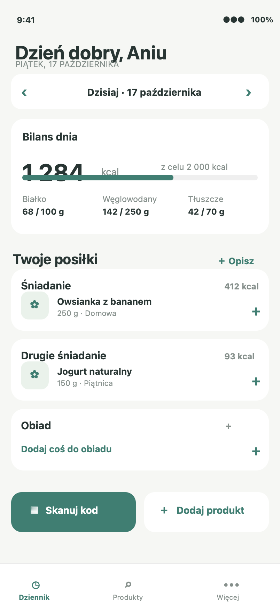
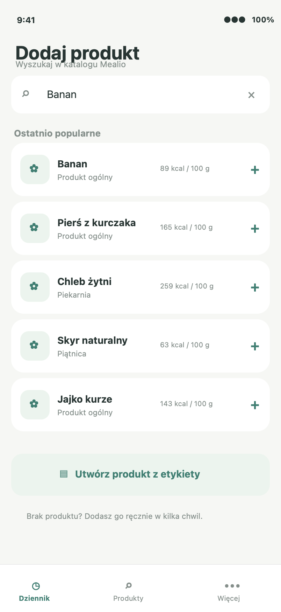
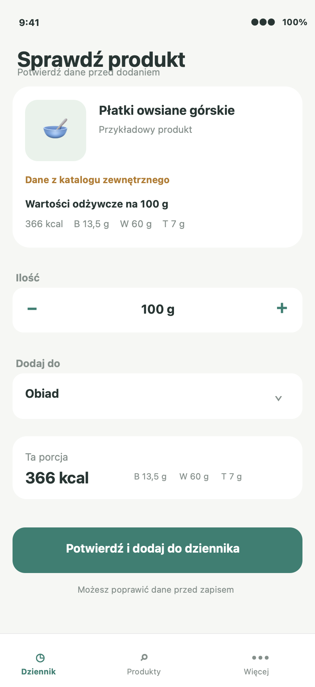
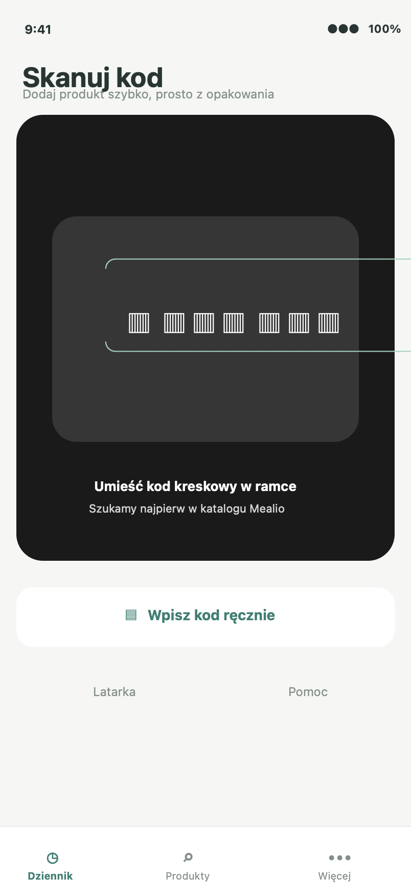
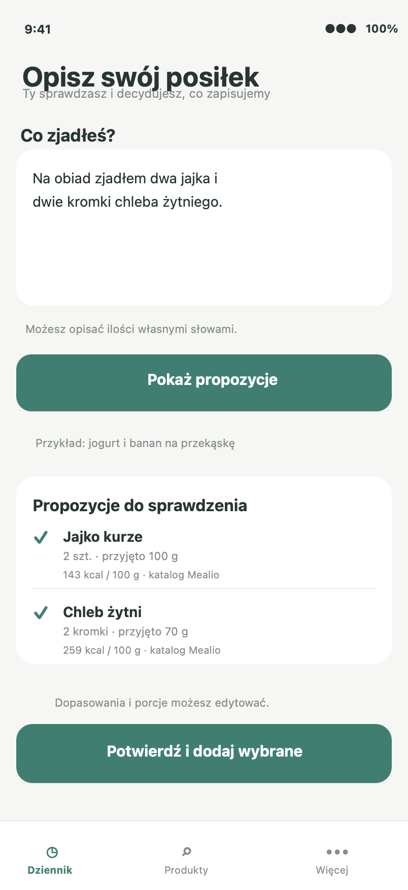

Pięć ekranów kluczowej ścieżki iOS. Autorska identyfikacja, lokalne przykładowe dane.

Bilans i szybki dostęp do dodawania.

Katalog oraz wejście do ręcznego dodania.

Źródło danych, ilość i posiłek przed zapisem.

Podgląd ramki, wpis ręczny i wynik/skanowanie.

Propozycje wymagające sprawdzenia i potwierdzenia.